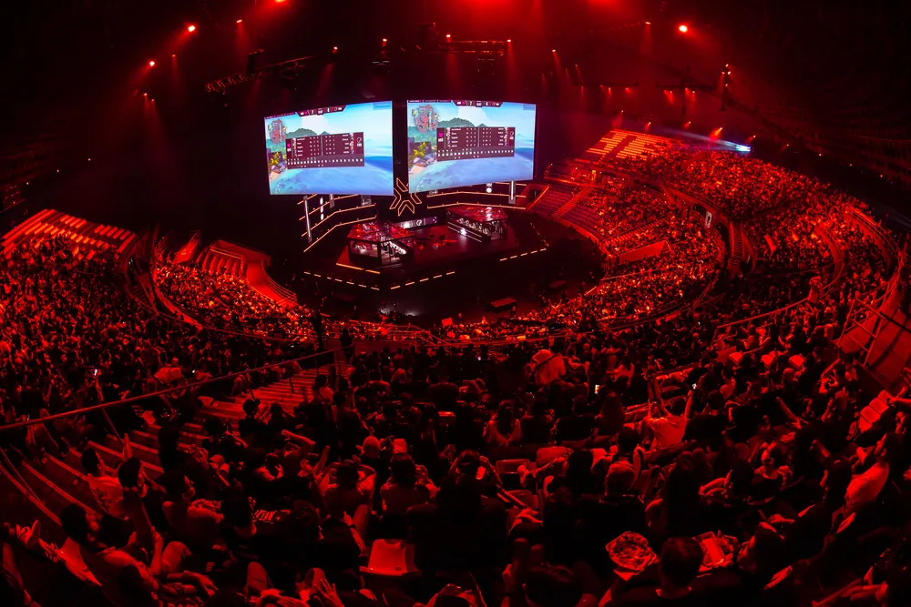

.png)


Valorant: VCT 2023 terá torneio internacional no Brasil
Os trinta times franqueados se reunirão na cidade em fevereiro e março O início do sistema de franquias no Valorant será marcante para o público brasileiro: São Paulo vai receber um campeonato internacional da modalidade, reunindo os trinta times franqueados pela Riot Games ao redor do mundo. A competição, apelidada de Kick Off, acontecerá entre fevereiro e março de 2023, e será o maior torneio internacional do FPS desde sua criação.

O rápido crescimento e o alto engajamento da comunidade brasileira de VALORANT, dentre as mais apaixonadas do mundo, certamente foi um dos fatores mais relevantes para essa decisão.
Esse engajamento se dá pela paixão da comunidade pelo jogo, pela presença de times e jogadores de alta performance que rapidamente colocaram o Brasil no topo do esporte globalmente, e também pela tradição que o Brasil traz de alto engajamento com os eventos de esports no Brasil — explica Carlos Antunes, head de esports da Riot Brasil, sobre a escolha do país para sediar o Kick Off.
VCT franqueado
Além do Kick Off, a Riot ainda revelou mais detalhes sobre a temporada do próximo ano: a empresa confirmou que as cidades-sede para os três campeonatos franqueados, chamados apenas de VCT, serão Los Angeles, Berlin, e Seoul.
Vale lembrar que o VCT será jogado em "macrorregiões": times do Brasil, LATAM e América do Norte jogarão todos na mesma liga em Los Angeles; e a mesma lógica se aplica para Europa, Oriente Médio e África (Berlin); e para a região do Pacífico (Seoul).
A disputa será entre março e maio, com os melhores times de suas regiões garantindo vaga no único Masters do ano. A Riot explica que, para garantir que os times se acomodem nas cidades-sede, 2023 terá apenas um split competitivo; a partir de 2024, a temporada será dividida em duas etapas — provavelmente inferindo que o circuito voltará a ter dois Masters anuais.
Depois do Masters, os times do VCT que ainda não garantiram a vaga no Champions irão para os Last Chance Qualifiers em julho, buscando um lugar no mundial. A temporada se encerra em agosto, com a coroação do campeão supremo no Valorant Champions 2023.
Valorant Challengers
Acontecendo simultaneamente ao VCT, o Valorant Challengers terá dois splits em 2023: entre janeiro e julho, os times disputarão por um lugar no Ascension, campeonato que dá vaga temporária na liga franqueada. De acordo com o calendário da Riot, o Ascension deve acontecer no mesmo período que os Last Chance Qualifiers.